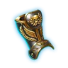
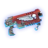
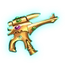
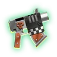
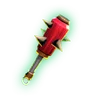
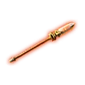

26 Raid17 saisons23
Raid17 saisons23 War6 saisons
War6 saisons
 Magnus · relatif15e sur 30 · -5,6 % (94 attaques)
Magnus · relatif15e sur 30 · -5,6 % (94 attaques) Lion El'Jonson · relatif21e sur 28 · -9,2 % (45 attaques)
Lion El'Jonson · relatif21e sur 28 · -9,2 % (45 attaques) Silent King · relatif22e sur 28 · -10,9 % (4 attaques)
Silent King · relatif22e sur 28 · -10,9 % (4 attaques) Mortarion · relatif18e sur 28 · -8,9 % (32 attaques)
Mortarion · relatif18e sur 28 · -8,9 % (32 attaques) Ghazghkull · relatif22e sur 30 · -8,1 % (14 attaques)
Ghazghkull · relatif22e sur 30 · -8,1 % (14 attaques) Belisarius Cawl · relatif25e sur 28 · -12,9 % (47 attaques)
Belisarius Cawl · relatif25e sur 28 · -12,9 % (47 attaques) Riptide · relatif24e sur 29 · -24,5 % (15 attaques)
Riptide · relatif24e sur 29 · -24,5 % (15 attaques) Screamer-Killer · relatif22e sur 30 · -10,9 % (19 attaques)
Screamer-Killer · relatif22e sur 30 · -10,9 % (19 attaques) Avatar de Khaine · relatif26e sur 29 · -16,9 % (29 attaques)
Avatar de Khaine · relatif26e sur 29 · -16,9 % (29 attaques) Rogal Dorn · relatif28e sur 30 · -23,4 % (25 attaques)
Rogal Dorn · relatif28e sur 30 · -23,4 % (25 attaques) Tervigon · relatifpas d'attaque
Tervigon · relatifpas d'attaque Tyran des Ruches · relatif14e sur 19 · -17,9 % (2 attaques)
Tyran des Ruches · relatif14e sur 19 · -17,9 % (2 attaques) Thaumachus (Magnus) · relatifpas d'attaque
Thaumachus (Magnus) · relatifpas d'attaque Abraxas (Magnus) · relatifpas d'attaque
Abraxas (Magnus) · relatifpas d'attaque Baraqiel (Lion El'Jonson) · relatifpas d'attaque
Baraqiel (Lion El'Jonson) · relatifpas d'attaque Forcas (Lion El'Jonson) · relatif10e sur 11 · -57,9 % (2 attaques)
Forcas (Lion El'Jonson) · relatif10e sur 11 · -57,9 % (2 attaques) Menhir (Silent King) · relatif15e sur 18 · -31,5 % (3 attaques)
Menhir (Silent King) · relatif15e sur 18 · -31,5 % (3 attaques) Nauseous (Mortarion) · relatif9e sur 10 · -15,6 % (4 attaques)
Nauseous (Mortarion) · relatif9e sur 10 · -15,6 % (4 attaques) Corrodius (Mortarion) · relatifpas d'attaque
Corrodius (Mortarion) · relatifpas d'attaque Gibbascrapz (Ghazghkull) · relatif11e sur 12 · -12,3 % (4 attaques)
Gibbascrapz (Ghazghkull) · relatif11e sur 12 · -12,3 % (4 attaques) Tanksmasha (Ghazghkull) · relatif14e sur 16 · -50,3 % (2 attaques)
Tanksmasha (Ghazghkull) · relatif14e sur 16 · -50,3 % (2 attaques) Tan Gi'da (Belisarius Cawl) · relatifpas d'attaque
Tan Gi'da (Belisarius Cawl) · relatifpas d'attaque Actus (Belisarius Cawl) · relatif14e sur 17 · -21,0 % (6 attaques)
Actus (Belisarius Cawl) · relatif14e sur 17 · -21,0 % (6 attaques) Sho'syl (Riptide) · relatif6e sur 9 · -25,1 % (2 attaques)
Sho'syl (Riptide) · relatif6e sur 9 · -25,1 % (2 attaques) Re'vas (Riptide) · relatif9e sur 9 · -30,1 % (4 attaques)
Re'vas (Riptide) · relatif9e sur 9 · -30,1 % (4 attaques) Neurothrope (Screamer-Killer) · relatifpas d'attaque
Neurothrope (Screamer-Killer) · relatifpas d'attaque Winged Prime (Screamer-Killer) · relatifpas d'attaque
Winged Prime (Screamer-Killer) · relatifpas d'attaque Aethana (Avatar de Khaine) · relatif6e sur 7 · -34,0 % (2 attaques)
Aethana (Avatar de Khaine) · relatif6e sur 7 · -34,0 % (2 attaques) Eldryon (Avatar de Khaine) · relatif9e sur 11 · -20,5 % (3 attaques)
Eldryon (Avatar de Khaine) · relatif9e sur 11 · -20,5 % (3 attaques) Sibyll (Rogal Dorn) · relatif11e sur 17 · -11,3 % (4 attaques)
Sibyll (Rogal Dorn) · relatif11e sur 17 · -11,3 % (4 attaques)
 Thaddeus (Rogal Dorn) · relatif5e sur 9 · +0,0 % (3 attaques)
Thaddeus (Rogal Dorn) · relatif5e sur 9 · +0,0 % (3 attaques) Tyranide Primus (Tervigon) · relatifpas d'attaque
Tyranide Primus (Tervigon) · relatifpas d'attaque
Magnus · relatif15e sur 30 · -5,6 % (94 attaques)Lion El'Jonson · relatif21e sur 28 · -9,2 % (45 attaques)Silent King · relatif22e sur 28 · -10,9 % (4 attaques)Mortarion · relatif18e sur 28 · -8,9 % (32 attaques)Ghazghkull · relatif22e sur 30 · -8,1 % (14 attaques)Belisarius Cawl · relatif25e sur 28 · -12,9 % (47 attaques)Riptide · relatif24e sur 29 · -24,5 % (15 attaques)Screamer-Killer · relatif22e sur 30 · -10,9 % (19 attaques)Avatar de Khaine · relatif26e sur 29 · -16,9 % (29 attaques)Rogal Dorn · relatif28e sur 30 · -23,4 % (25 attaques)Tervigon · relatifpas d'attaqueTyran des Ruches · relatif14e sur 19 · -17,9 % (2 attaques)Thaumachus (Magnus) · relatifpas d'attaqueAbraxas (Magnus) · relatifpas d'attaqueBaraqiel (Lion El'Jonson) · relatifpas d'attaqueForcas (Lion El'Jonson) · relatif10e sur 11 · -57,9 % (2 attaques)Menhir (Silent King) · relatif15e sur 18 · -31,5 % (3 attaques)Nauseous (Mortarion) · relatif9e sur 10 · -15,6 % (4 attaques)Corrodius (Mortarion) · relatifpas d'attaqueGibbascrapz (Ghazghkull) · relatif11e sur 12 · -12,3 % (4 attaques)Tanksmasha (Ghazghkull) · relatif14e sur 16 · -50,3 % (2 attaques)Tan Gi'da (Belisarius Cawl) · relatifpas d'attaqueActus (Belisarius Cawl) · relatif14e sur 17 · -21,0 % (6 attaques)Sho'syl (Riptide) · relatif6e sur 9 · -25,1 % (2 attaques)Re'vas (Riptide) · relatif9e sur 9 · -30,1 % (4 attaques)Neurothrope (Screamer-Killer) · relatifpas d'attaqueWinged Prime (Screamer-Killer) · relatifpas d'attaqueAethana (Avatar de Khaine) · relatif6e sur 7 · -34,0 % (2 attaques)Eldryon (Avatar de Khaine) · relatif9e sur 11 · -20,5 % (3 attaques)Sibyll (Rogal Dorn) · relatif11e sur 17 · -11,3 % (4 attaques)Thaddeus (Rogal Dorn) · relatif5e sur 9 · +0,0 % (3 attaques)Tyranide Primus (Tervigon) · relatifpas d'attaque
Lavistodes
Core86%Flex64%MOW83%
Neuro
Core52%Flex46%MOW8%
Battlesuit
Core83%MOW55%

Méchas
Core58%Flex84%MOW72%
| Core | Flex | Machines |
|---|---|---|
Lavistodes86%        1 1  | 64%         | 83%    |
Neuro52%  9 9   1 1 | 46%    1 1 | 8%  |
Battlesuit83%  9 9  10 10  | — | 55%  |
Méchas58%  99 99  | 84%   | 72% |
73Puissance
116Personnages
29Mythiques
73Légendaires
14Épiques
Données du 11/11/2026Orbes impériaux
 68
68 10
10
6810Orbes xénos 1507
1507
1507Orbes chaos 4599
4599
4599Tomes d'XP 161
161 54
54
16154Réquisitions 3
3 14
14
314 Adepta Sororitas5
Adepta Sororitas5

Isabella
3546

 1
1 6
6 6
6Roswitha
4444
611
Celestine
3636
1 1
1 1
1
Vindicta
3535
 1
1 11
11Morvenn Vahl
11
 Adeptus Astartes3
Adeptus Astartes3

Lysander
3636
1111
Nubari
11

Cyrus
2626
 Adeptus Custodes5
Adeptus Custodes5
Aesoth
5658
 1
1 11
11Kariyan
6060
51 1
1Trajann
6060
11 1
1Atlacoya
5136
11111
Tyrith
1313

 11
11 1
1 Adeptus Mechanicus5
Adeptus Mechanicus5
Exitor-Rho
5557
 9
9
19Vitruvius
4560
1111Tan Gi'da
5555
219Actus
5251
1 11
11
Sy-gex
3535
 1
1 11
11 Astra Militarum6
Astra Militarum6
Thaddeus
3535
11111
Yarrick
4135
111
Dreir
3636
111
Kut
2623
 111
111Sibyll
2617
181Creed
11
 Black Templars5
Black Templars5
Helbrecht
5054
1 11
11
Jaeger
3535
111
Thoread
2727
1 11
11
Godswyl
2727
111
Burchard
3535
 1
1 11
11 Blood Angels6
Blood Angels6
Dante
3651
111Mephiston
5050
111
Mataneo
3535
111
Nicodemus
3536
1111
Lucien
3535
111
Cezare
3535
3 9
9 1
1 Dark Angels5
Dark Angels5

Sarquael
3535
111
Azrael
288

 11138
11138Forcas
3618
161
Asmodai
1717
111Baraqiel
2626
111 Space Wolves6
Space Wolves6

Ragnar
5555
511
Baldr
3651
111
Tjark
2617
111
Ulf
3535
1111Arjac
1717
111
Njal
1717
111 Ultramarines6
Ultramarines6

Calgar
4650
1116
Bellator
5041
5111
Titus
2727
111
Certus
2917
111
Incisus
3535
111
Tigurius
3517
111 Aeldari6
Aeldari6
Aethana
850

111Eldryon
3550
111Lhykhis
5050
 1111
1111 11
11
Jain Zar
3636
111Maugan Ra
1745
1111
Calandis
178
111 Genestealer Cults5
Genestealer Cults5

The Patermine
3535
 11
11 1
1
Judh
3838
111111
Isaak
3635
111
Hollan
3535
111
Xybia
2828
111 Leagues of Votann4
Leagues of Votann4

Uthar
11
111Ammuk
41
111
Vynn
1817
1 91
91
Havyr
18
191 Necrons6
Necrons6
Aleph-Null
5036
 1
1 11
11 1
1 36
36Makhotep
3636
111Anuphet
3636
111
Imospekh
3636
111 36
36Thutmose
3636
111
Thothmek
11
 Orks6
Orks6
Gulgortz
6060
111
Snotflogga
3649
 3
3 1
1 1
1
Snappawrecka
3535
15 5
5Gibbascrapz
3636
 1
1 111
111Tanksmasha
3535
1111
Zapspitta
2626

1 1
1
1 T'au Empire6
T'au Empire6
Sho'syl
3555
111Darkstrider
1760
111Farsight
5258
1011Re'vas
5260
911Shadowsun
5151
115
Aun'Shi
5036
 111
111 Tyranids5
Tyranids5
Neurothrope
3652
 119
119Winged Prime
3636
1 11
11
Deathleaper
2727
111
Tyrant Guard
2626
 111
111
Parasite of Mortrex
88
111 Black Legion5
Black Legion5
 39
39Haarken
3939

1 1
1 1
1Archimatos
3939
 111
111
Angrax
3838
 111
111
Volk
3636
111Abaddon
5050
1111 Death Guard5
Death Guard5
 41
41Maladus
4141
111Nauseous
5050
111Corrodius
3838
11 1
1
Typhus
3636
111
Pestillian
3535
 1
1 11
11 Emperor's Children5
Emperor's Children5
Laviscus
5136
11 1
1
Lucius
3636
111
Shiron
3636
111
Adamatar
3535
111
Hascule
2424
191 Thousand Sons6
Thousand Sons6
Abraxas
5050
1161Ahriman
5050
1111
Toth
4242
111Yazaghor
3535
111Thaumachus
3535
111
Sekhetar Robot
11
 World Eaters5
World Eaters5
Kharn
5860
51 1
1
Azkor
3232
111
Macer
3535
119
Wrask
3636
111Tarvakh
2727
111Machines de guerre11
Biovore
6060

Galatian
602
Plagueburst Crawler
127
Reanimator
146

Forgefiend
5039

Tson'ji
2626

Exorcist
11

Malleus Rocket Launcher
11

Rukkatrukk
11
Z'Kar
835


Storm Speeder
11
Aucun personnage ne correspond.